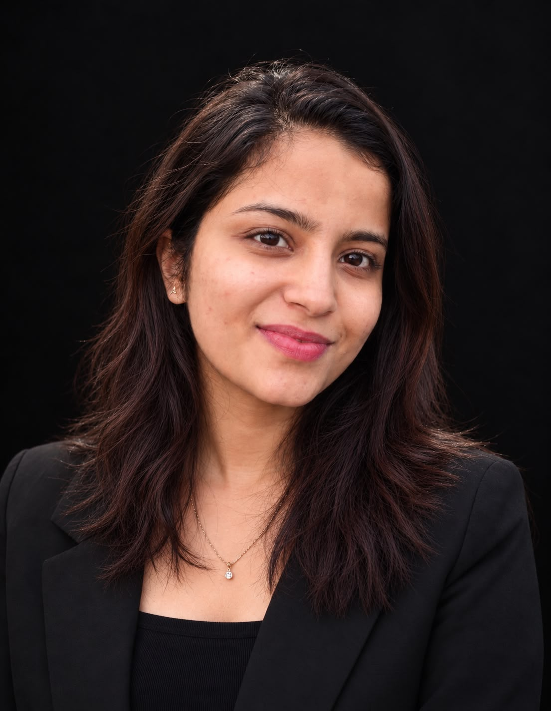

Data science · FinTech · Kerala, India
Turning messy data into decisions people trust.
I build forecasting models, data pipelines and risk analytics for financial and business data. Final year B.Tech student in Computer Science and Engineering (Data Science), open to roles from mid 2027.

I like turning messy financial and business data into models people can act on: forecasts, risk scores and decisions that come with an explanation.
I am a final year B.Tech student at MACE, Kothamangalam. Alongside coursework I have worked on cybersecurity research and led student communities across technical, business and MUN circles.
Analytics, machine learning, software and product.
Finance focused machine learning, built end to end.
What I do when I am not modelling data.